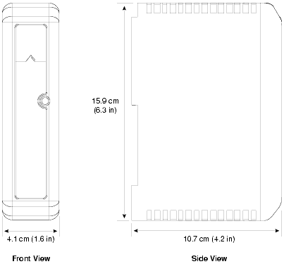
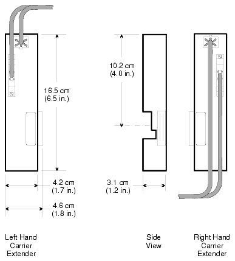

Source: DeltaV Scalable Process System with Zone 0 Field Circuits Installation Instructions, D800001X312, April 2021, pp. 543–548
Key Concept: Intrinsically Safe (I.S.) I/O is designed for use in hazardous areas where flammable gases, vapors, or dust may be present. The I.S. circuits limit energy to levels below the ignition threshold, preventing explosions under both normal and fault conditions.
I.S. I/O Components Overview
The DeltaV system includes the following I.S. I/O components:
I/O Cards
Card Type
Description
I.S. DI
16-Channel Discrete Input
I.S. DO
4-Channel Discrete Output
I.S. AI
8-Channel, 4–20 mA, HART Analog Input
I.S. AO
8-Channel, 4–20 mA (non-HART and HART variants)
Terminal Blocks
Block Type
Description
I.S. 8-Channel terminal block
For 8-channel I.S. I/O cards
I.S. 16-Channel terminal block
For 16-channel I.S. I/O cards
Supporting Hardware
I.S. Power Supply — provides isolated power to I.S. field circuits
I.S. LocalBus Isolator — separates non-I.S. and I.S. components
I.S. Carrier Extenders (right and left hand) — bridge two I.S. carriers
I.S. 8-Wide Carrier — mounts I.S. I/O cards
Power Supply Carrier and Isolator Carrier — dedicated mounting hardware
⚠️ Warning — Card/Block Compatibility: Always verify that your I.S. I/O cards and terminal blocks are compatible before plugging in cards. Card damage can result if an I/O card and terminal block are incompatible.
⚠️ Warning — Hazardous Area Safety: In any hazardous area installation, read and follow the device manufacturer's design and installation documents. Failure to follow documentation could result in an unapproved and unsafe application. Additionally, follow your plant's procedures for making the area safe during installation and maintenance.
Mixing I.S. and Non-I.S. Cards
Important Rule: You can use both I.S. and non-I.S. I/O cards within one DeltaV system, but you must separate them with a LocalBus Isolator to protect the I.S. cards from damaging voltages. Only one LocalBus Isolator can be used per DeltaV system.
Key planning considerations:
Plan your I/O subsystem carefully — you cannot add non-I.S. cards beyond the LocalBus Isolator.
If using multiple I.S. system power supplies, intersperse them among the cards.
Refer to DeltaV Scalable Process System with Zone 0 Field Circuits Installation Instructions (Part Number 12P1990) for detailed wiring information.
Carrier Layout Example
The following layout shows a LocalBus Isolator separating non-I.S. and I.S. cards:
System Power → Controller
Non-I.S. I/O Cards (Gray Terminal Blocks)
💡 Tip: Field power is provided by the I.S. I.O cards. Do not connect to the connectors on the top of the I.S. 8-wide carrier.
Grounding Requirements
Proper grounding is critical for I.S. I/O subsystems:
Dedicated Plant Ground Grid Point
├── Isolated Common Ground Reference
├── Carrier Shield Bar
├── I.S. Power Supply
└── LocalBus Isolator
Figure O-2: Grounding Requirements for I.S. I/O (conceptual diagram)
O.1 — I.S. LocalBus Isolator
Purpose: The I.S. LocalBus Isolator separates non-I.S. components (I/O cards and controllers) from I.S. components. The controller is always non-I.S. — you must always use a LocalBus Isolator to isolate the controller from I.S. cards.
Specification
Value
Input
12 V @ 60 mA maximum
Output
12 V @ 60 mA maximum
Power dissipation
1.2 W maximum
Mounting
LocalBus Isolator carrier
O.2 — I.S. Carrier Extenders
I.S. carrier extenders bridge two I.S. carriers to make one complete I.S. system. They allow building a system around obstacles such as cabinet walls or pipes.
Right-hand carrier extender — extends from the right side of a carrier
Left-hand carrier extender — extends from the left side of a carrier

DeltaV hardware module front/side view — standard form factor for chassis-mounted installation in industrial process control systems (page 546)

DeltaV I/O module technical drawing — mechanical dimensions and connection topology for fieldbus power and communication wiring (page 547)
class="quiz">
📝 Knowledge Check
Q1: How many LocalBus Isolators can be used in a single DeltaV system?
A: Only one. Non-I.S. cards cannot be added beyond the isolator.
Q2: What are the two terminal block color-codings for I.S. vs non-I.S. cards?
A: Blue terminal blocks for I.S. cards, gray terminal blocks for non-I.S. cards.
Q3: What provides field power to I.S. circuits?
A: The I.S. I/O cards themselves provide field power — not the connectors on top of the carrier.